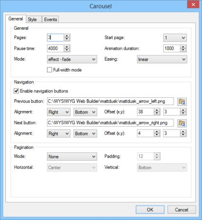

Using the Carousel to create an animated slideshow.
In WWB10 we have introduced the activate event for the Carousel. This make it possible to trigger actions when the Carousel goes to another page. In this tutorial I have used this feature to create an animated slideshow where each Carousel page displays an image with an animated title.
This demo was inspired by the website http://www.mattdusk.com/. One of today's great jazz singers.
You can check out the result here:
https://www.wysiwygwebbuilder.tk/support/mattdusk/index.html
In WWB10 we have introduced the activate event for the Carousel. This make it possible to trigger actions when the Carousel goes to another page. In this tutorial I have used this feature to create an animated slideshow where each Carousel page displays an image with an animated title.
This demo was inspired by the website http://www.mattdusk.com/. One of today's great jazz singers.
You can check out the result here:
https://www.wysiwygwebbuilder.tk/support/mattdusk/index.html
Step 2
Add one image to each page of the Carousel. You may need to use the keyboard to align the image exactly inside the Carousel panel.
Alternatively you can manually enter the coordinates in the Property Inspector.
Add one image to each page of the Carousel. You may need to use the keyboard to align the image exactly inside the Carousel panel.
Alternatively you can manually enter the coordinates in the Property Inspector.
Demo:
https://www.wysiwygwebbuilder.tk/support/mattdusk/index.html
Download the demo project (requires version 10.1 or newer):
https://www.wysiwygwebbuilder.tk/support/mattdusk/mattdusk.zip
https://www.wysiwygwebbuilder.tk/support/mattdusk/index.html
Download the demo project (requires version 10.1 or newer):
https://www.wysiwygwebbuilder.tk/support/mattdusk/mattdusk.zip
Step 3
Each image will have its own title object and each title object has a different size. In this case I have used a Shape object with text.
Insert a Shape, add some text for each image and place it on top of the image.
Note that in this project I have renamed the IDs of the shapes to 'Title1', 'Title2' etc.
Each image will have its own title object and each title object has a different size. In this case I have used a Shape object with text.
Insert a Shape, add some text for each image and place it on top of the image.
Note that in this project I have renamed the IDs of the shapes to 'Title1', 'Title2' etc.
Tip:
Because the images fills the entire Carousel panel you cannot easily navigate between pages because the navigation items are blocked by the image. But you can use hold down the CTRL key and click the Carousel border to go to the next page. Make sure the Carousel itself is selected first and not an image or other object on the Carousel.
Because the images fills the entire Carousel panel you cannot easily navigate between pages because the navigation items are blocked by the image. But you can use hold down the CTRL key and click the Carousel border to go to the next page. Make sure the Carousel itself is selected first and not an image or other object on the Carousel.
Step 1
Insert the Carousel object. Set the mode to fade (or another effect of your choice). In this demo I have used 3 images, so set the page count to 3.
Insert the Carousel object. Set the mode to fade (or another effect of your choice). In this demo I have used 3 images, so set the page count to 3.

Step 4
Initially the titles will be hidden, so hide the Shapes with the Object Manager.
Initially the titles will be hidden, so hide the Shapes with the Object Manager.
Step 5
Next add the events to show the title (Shapes) with animation: click 'Events' in the Carousel's properties.
The Carousel supports up to 25 pages and each page has its own 'activate' event. For the first image add event 'activate[01]', set the action to 'Show with effect' and the target to the first Shape: Title1. I have selected 'Drop Left', but you can use any effect you like.
Repeat this step for all 3 titles.
Next add the events to show the title (Shapes) with animation: click 'Events' in the Carousel's properties.
The Carousel supports up to 25 pages and each page has its own 'activate' event. For the first image add event 'activate[01]', set the action to 'Show with effect' and the target to the first Shape: Title1. I have selected 'Drop Left', but you can use any effect you like.
Repeat this step for all 3 titles.
Step 6
The last step is to hide the titles when you switch to another page, this makes sure the initial state of the title is hidden the next time you active it.
The last step is to hide the titles when you switch to another page, this makes sure the initial state of the title is hidden the next time you active it.

Of course you are not limited to one title per image. You can add multiple objects to each Carousel page and show them with different animations to create amazing slideshows.